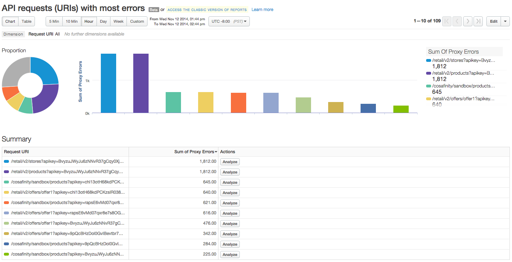
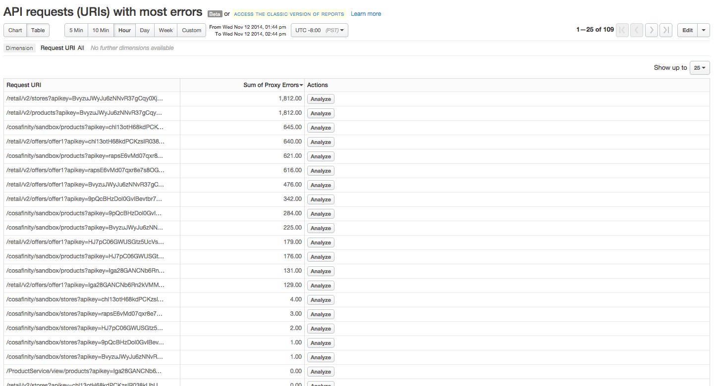

[toc]
A custom report is a way to specify precisely what you want to measure across your API program. For instance, you can measure all API traffic generated from a specific client IP address. For information on creating custom reports, see http://docs.apigee.com/node/15696.
A custom report is similar in look and feel to analytics dashboards, however the data that's displayed depends on the metrics and drill-down dimensions you selected when you created the custom report.


Dispersion charts
Shows the range of values over the selected time period for certain metrics.
Analyze buttons
Click Analyze in the Summary table to see more metrics, including Compare to Previous Period and Analyze Anomalies.
Table view
If your custom report includes many rows in the Summary table at the bottom of the Chart view, click Table to access a user-friendly way to scroll through and display the Compare to Previous Period and Analyze Anomalies views of your custom report data.
Use the Show up to drop-down to control the number of rows you want to display in the table. You can display up to 200 rows at a time.